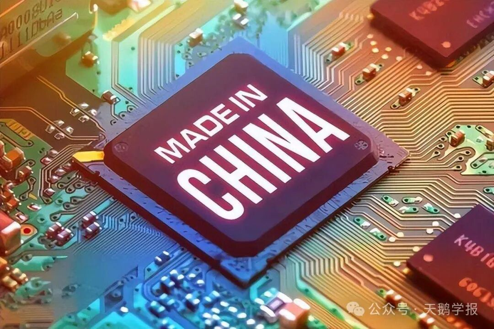
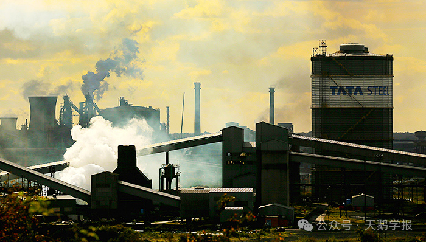

全球价值链中的产业转移承接工作就像获得了从发达国家垂下来的绳子，随风飘摇，没有根基，随时可能被收回；而自主创新则是自己搭建的木架梯子，向着高处延伸。
在21世纪的今天，全球化已不再是简单的商品交换，而是一场涉及服务、技术、资本和人才流动的全方位交互。但是，随着信息技术的飞速发展，传统的比较优势理论似乎遇到了新的挑战。技术差异不再一成不变，而是处于不断地流动和转移之中。企业借助成熟的技术转移，得以在全球范围内利用更低的劳动力成本获取高额利润。在此过程中，技术转移和知识外溢日益频繁，使得技术差异的界限不再清晰，共同构建起一个持续动态变化的进程。
这就像是一场全球范围内的“技术接力赛”，每个国家都在努力地接过这一棒，以期在这场赛跑中赢得先机。那么，在这个充满变数的新时代，比较优势理论是否还适用？
与此同时，贸易的分配效应依然是威胁贸易合意性的“阿克琉斯之踵”：产业转出地区就业机会的丧失、不同技能类型工人的收入差距等，是伴随全球价值链重新洗牌传出的阵痛。
如此种种，不禁让我们思考：从比较优势的分析视角出发，它是否还能为政府制定政策提供有效依据？我们究竟是该凭借比较优势思想这一宏观视角，去展望整体福利提升的美好愿景，还是着眼当下，关注失业人口的抗议以及贫富差距的鸿沟？又该采取何种措施，去弥合优雅理论与悲怆现实之间的裂痕，搭建起跨越眼前困境通往未来远景的桥梁？我们的经济故事将如何继续？让我们带着这些疑问，一起走进全球化的“微笑曲线”，听听一朵玫瑰讲述的21世纪比较优势的故事。
微笑的比较优势：来自Baldwin的补充
自李嘉图的比较优势思想诞生至今，已历经两个多世纪。但其所构建的优雅且简洁的模型，依旧具有强大的理论力量，为自由贸易的正当性奠定了坚如磐石的基础。概括而言，是两个关键概念：相对价格和机会成本。相对价格可理解为购买一瓶葡萄酒的花费，能用来购置多少匹布；机会成本则通过生产A产品所耗费的时间，原本能够产出多少B产品来衡量。例如，若生产一个A产品的时间可生产4个B产品，那么生产A产品的机会成本就是4个B产品。
根据李嘉图模型，一个国家产品的相对价格仅由本国的生产技术条件决定；两国之间的贸易模式，则由两国技术差异导致的比较优势决定：不同国家生产同一种商品的机会成本不同，而机会成本不同则是由于内生于国家整体生产率的工资成本不同导致的。根据这个逻辑，即使富国和穷国进行贸易，两个国家依然可以互利共赢，使整体福利上升。
步入信息技术革命后的21世纪，全球化不再仅仅局限于货物流通层面的商品贸易全球化，还涵盖了服务贸易、技术转移、资本流动等多个领域。这一变化致使比较优势的概念，不再像百年前那般清晰明确。
生产全球化使得商品生产不再限定于某一个国家。想象一下，你手中拿着一部苹果手机，它是一个全球合作的结晶。从美国的设计，到中国的组装，再到全球的销售，这个过程跨越国界，涉及不同的生产阶段，产业链中的利润分配也有所不同：产业链两端--研发和销售的附加值高，获利最多，而中间的制造环节利润较低。中间高，两边低，这样的“U型”曲线，如同一张大大的笑脸——这便是“微笑曲线”。
只不过，对于盘踞于笑脸两端的发达国家来说，这是利益最大化的优胜之笑，对徘徊于笑脸底部的发展中国家，这可能是艰难追赶之路上的苦涩之笑。

图 1 微笑曲线 资料来源：Baldwin,R value-creation
那么透过“微笑曲线”去审视李嘉图的思想，会有什么新的启发呢？日内瓦大学经济学教授，前美国总统经济顾问委员会高级经济学家Baldwin从全球价值链视角重新审视比较优势思想。他认为价值链中的比较优势是去国有化的（denationalized），是细化至具体企业的利益。他用两个脱钩（unbundling）的概念来区分19世纪的全球化和21世纪的全球化，认为第一次脱钩 （1st unbundling）将生产和消费距离拉开——由于运输成本、制度成本等构成的贸易成本降低，商品可以有效地跨国流通，扩大贸易范围。不妨回顾李嘉图模型：贸易成本降低，贸易范围扩大，会带来两国福利的上升。
第二次脱钩（2nd unbundling）是指生产过程可以分解。在21世纪，商品不再简单的被分类到劳动密集型或者资本密集型部门，生产可被分解成价值链中的不同环节，如：在美国的实验室中研发设计环节，在中国的制造工厂中加工生产，在印度的办公室中进行售后咨询服务——这个生产分工场景也意味着全球化正式进化到它的3.0版本。驱动这一过程的基础是信息技术革命，它将生产过程中的协调成本大大降低——在“鸿雁传书，飞鱼带信”的年代，一定难以想象有朝一日我们可以跨越山川湖海的阻隔，让不同时空的人可以同时对话协作，共同制造一个产品。
我们不难发现，在价值链视角中，不同国家依然存在“更擅长做某事”的比较优势，不过此时比较优势不再体现在某一具体产品上，而是体现在生产的环节中：技术差异使得每个国家在价值链中的分工不同——这便是Baldwin对比较优势的补充。以围绕日本形成的新三角贸易为例，其模式为日本负责研发、中国承担制造、日本再进行品牌管理和销售。到此为止，Baldwin向我们展示了全球化背景下对技术差异更为精细的运用，基于价值链过程构建的比较优势模型，是对李嘉图比较优势思想的细化与拓展。
玫瑰的芳香与刺痛：肯尼亚花农的全球化历程
沿着价值链向比较优势的思想深处漫溯，让我们透过肯尼亚的玫瑰花产业链，看看全球化之中，比较优势带来的不同悲喜。
在肯尼亚，花卉产业是重要的出口行业，大部分花卉产品通过全球价值链销往欧洲市场。想象一下，肯尼亚的花农在黎明前起床，采摘最新鲜的玫瑰花，这些花儿将被迅速打包，运往机场，然后飞跃千山万水，最终出现在欧洲的超市和市场中。这看似是一个通过全球价值链发挥比较优势的美好故事，但现实情况却复杂得多。
随着新技术，比如更先进的灌溉系统和包装技术等的引入，肯尼亚的花卉产业需要更高的技能和更严格的质量控制来满足国际市场的标准。这导致了对技术型劳动力的需求增加，而对于大量非技术型劳动力的需求减少。换句话说，虽然新技术提高了生产力，但它并没有带来相应的就业增长，因为这些技术并不需要大量的非技术劳动力，可以想象，结构性失业的人口会上升。
此外，全球价值链中的国际买家对产品质量有严格的要求，这使得肯尼亚的小型花农缺乏投资资金，很难满足这些标准，从而限制了他们参与全球市场的机会。只有那些能够投资于新技术、培训和质量控制的较大型农场才能满足这些要求，并从中获益。
肯尼亚的玫瑰花在欧洲人家的餐桌上明媚绽放，而个体花农可能对着自家的花田愁苦连连。
肯尼亚依然在种植玫瑰花，种植玫瑰的人的悲欢却并不相通。肯尼亚玫瑰花故事，让我们看到了全球化的复杂性，也启发我们思考如何让全球化更加包容和可持续。
图 2 肯尼亚是欧洲的花园
悬垂的绳子与向上的阶梯
当一个国家更适宜从事高附加值阶段的生产时，往往会选择将低附加值的劳动密集型任务外包。外包过程会发生什么呢？伴随着外包工作，跨国公司将其特有的市场营销、管理模式和生产技术一并传递给了接收外包任务的国家和地区，这就产生了技术流动。技术的流动与发展宛如海浪，无论是发达国家还是发展中国家，都期望能够奋勇向前，紧跟技术浪潮。然而，全球价值链所赋予的发展空间，对于北方发达国家和南方发展中国家而言，真的是相同的吗？
Baldwin认为这种技术流动对发展中国家是一项利好。因为技术流动，发展中国家可以接触到先进技术并且进行学习和模仿。这就像是从发达经济体伸下来一架梯子，欠发达经济体希望能顺着它一步步向着“笑脸”的两端攀爬。只不过，这个梯子是否稳固，什么时候会消失，延伸到哪里，就不得而知了。
玫瑰花的故事让我们听到了另一种声音。事实上，哈佛大学的经济学家Rodrik研究发现，全球价值链对发展中国家的冲击或许大于利好。由于在全球价值链中流动的技术往往是已发展成熟的技术，这不仅使得发展中国家的增长空间受限，还提高了劳动力参与相关产业的门槛，进而削弱了发展中国家在劳动力密集型产业方面的比较优势 。
正因为如此，Rodrik认为发展中国家应该更关注于国内整合，由政府支持加大人力资本的投入，制定产业政策，加强政企合作。在肯尼亚玫瑰的故事中，政府需要扮演关键角色。它需要在提升整个产业的竞争力和保护弱势群体之间找到平衡。一方面，政府需要通过教育和技术培训，提升花农的技能，帮助他们适应新的生产要求；另一方面，也需要通过政策支持，为个体花农提供更多的市场机会，减少他们被边缘化的风险。
现实通常比故事复杂得多，全球价值链中的比较优势恰似玫瑰花，有着瑰丽外表，却也暗藏坚硬小刺。
对发达国家而言，在全球价值链中用于外包部分的是已然成熟的技术，因而从表面上看，技术流动似乎不会对其技术领先地位构成威胁，反而能在资本利用效率上获得益处，然而这是需要付出代价的：随着技术外包，大量产业工人会因企业 “优化” 人员配置而失业。而对发展中国家来说，在承接外包业务基础上开展的开发创新，大多属于商品在东道国本土化的形式创新应用，也就是所谓的外源式创新。一旦失去人口红利和低廉劳动力成本，产业就可能转移至下一个成本更低廉的国家。这实际上给发展中国家敲响了警钟：唯有依靠自主创新，即内源式创新，才能赢得真正具有增长空间的核心技术。
全球价值链中的产业转移承接工作就像获得了从发达国家垂下来的绳子，随风飘摇，没有根基，随时可能被收回；而自主创新则是自己搭建的木架梯子，向着高处延伸。
中国在全球供应链中的崛起就是搭建自己的梯子的过程。2001年加入WTO以后，中国在许多方面调整政策以适应国际贸易规则，并不断加大开放力度、缩减“负面清单”，提供优化的投资环境和营商环境，吸引全球优秀的跨国公司在中国设立工厂以及研发部，使中国制造畅销全球，成为“世界工厂”。结合中国市场具有空间大、层次多、需求多元化的特点，依靠改善营商环境、提高人力资本质量及自主创新培育自己技术优势，向产业链高附加值端移动。
因此，全球价值链中的比较优势思想对于发展中国家的一个重要的启示是：技术优势的格局会不断动态变化，当前技术转移的红利已经差不多被收割殆尽，不能只满足于嵌入全球价值链底部，而应该向价值链上游、下游移动——远离比较优势锁定的风险，在动态平衡中重塑自己的比较优势。

图 3 中国制造需要追求内源式创新
睁开比较优势思想的微观之眼
英国参与全球价值链，确实导致了制造业就业率下降，不过与之相关的就业机会有所增加，企业利润也得以提升。从整体贸易来看，福利有所提升，然而工人的利益却依然遭受了损害。
Baldwin指出，在21世纪的全球化进程中，由于比较优势愈发细化，所带来的分配效应不仅更具不确定性，且影响范围更为分散。一些原本具有一定技术门槛的职业，也可能突然面临被外包的情况。例如，服务热线工作被印度班加罗尔承接，许多公司还将重复性的数据处理工作外包出去，使得印度等地区逐渐形成了规模庞大且雇佣成本较低的 “数字劳工” 群体。
对于高福利国家，制定帮助失业人口再就业的政策变得愈发困难，因为下一个可能丢失的工作具有不确定性，不再能够轻易区分所谓的“朝阳产业”和“夕阳产业”。而随着产业不断升级，同一产业对工人技能的要求也在持续变化和提高。

图 4 英国制造业萎缩工厂外景
在当下及未来，制定一系列政策安排至关重要，比如培养人们的终身学习能力，为低技能劳工搭建学习技能的上升通道等。
或许李嘉图比较优势的一部分当代意义正在于此：它简约又迷人，始终在前方召唤着我们，促使我们探寻发展的良方，然而现实却如迷雾笼罩，道路崎岖难行。
21世纪，国家间的技术差异催生出产业链的差异化分工，进而形成比较优势；而技术流动使得这种优势始终处于动态变化之中。"微笑曲线" 既见证了贸易为全球经济带来的福利增长，也目睹了因技术结构调整而被挤出曲线的技术工人。以李嘉图比较优势思想的宏观视角审视，既要看到整体进步，也要关注那些在进步过程中承担代价的具体人群，唯有如此，我们才能清醒认识到，任何发展成果都并非理所当然。
21世纪里，比较优势以新的形态塑造着全球分工，你看到了飞升的五彩气球，也不要忽略那些快速下坠的碎石：它们之所以看起来如此截然不同，只是因为你站立的位置不同而已。
陀思妥耶夫斯基说：“爱具体的人，不要爱抽象的人。爱生活，不要爱生活的意义。”未来，如何在技术进步与包容性增长之间找到平衡，将是每个国家都必须面对的课题。
我们不仅要看到全球化的宏大叙事，更要关注每一个具体的人，关注他们的生活、他们的梦想，以及他们在全球化浪潮中的挣扎与希望。
图 5 失业工人在职业中心外排队等待处理失业申请
参考资料
- Baldwin, R (2006), “Globalisation: The Great Unbundling(s)”, Globalisation Challenges for Europe and Finland project, Economic Council of Finland.
- Baldwin, R and S Evenett (2012), “Value Creation and Trade in 21st Century Manufacturing: What Policies for UK Manufacturing?,” in D Greenaway (ed.), The UK in a Global World: How Can the UK Focus on Steps in Global Value Chains That Really Add Value?, London: CEPR, pp. 71-128
- De Marchi V, Giuliani E, Rabellotti R. Do global value chains offer developing countries learning and innovation opportunities?[J]. The European Journal of Development Research, 2018, 30: 389-407.
- Rodrik D. New technologies, global value chains, and developing economies[R]. National Bureau of Economic Research, 2018.
- Krugman, P. (2002). Ricardo’s difficult idea: why intellectuals don’t understand comparative advantage. In The economics and politics of international trade (pp. 40-54). Routledge.